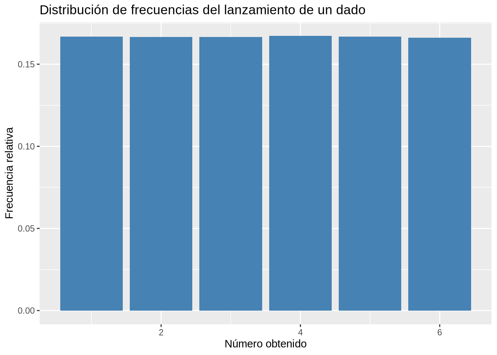
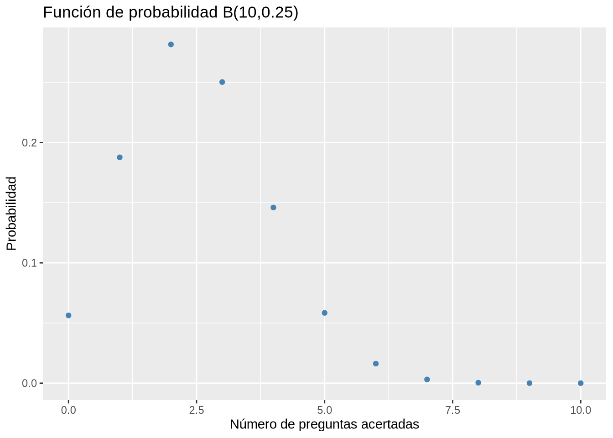
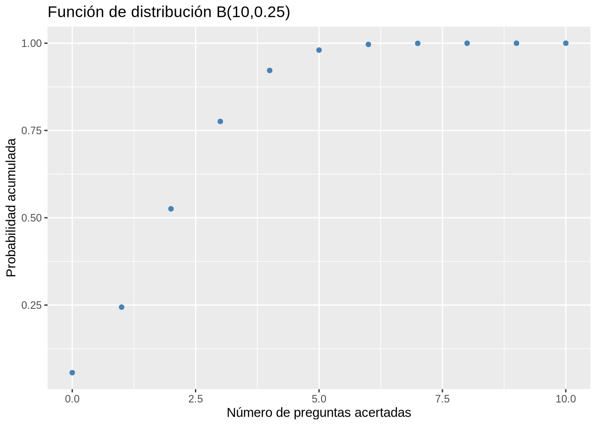
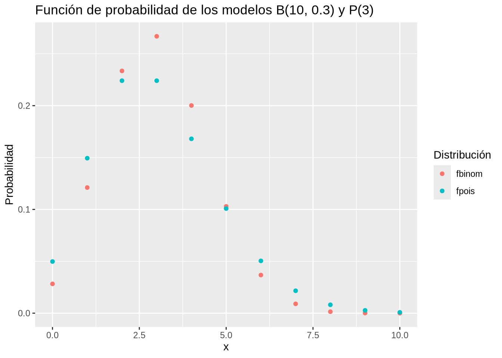
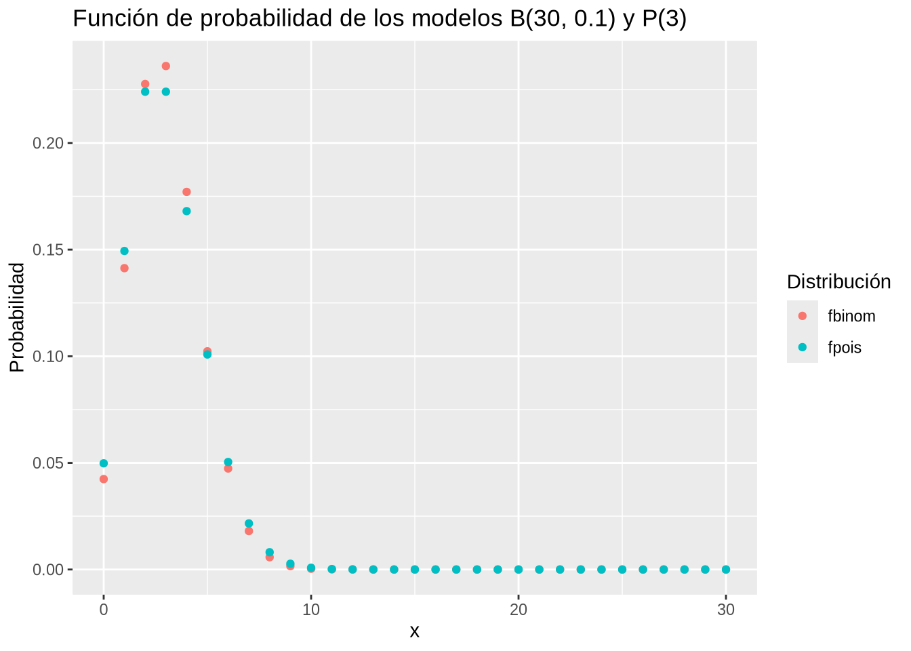
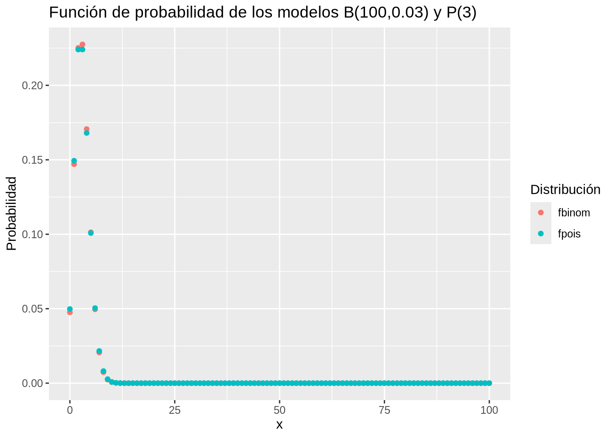
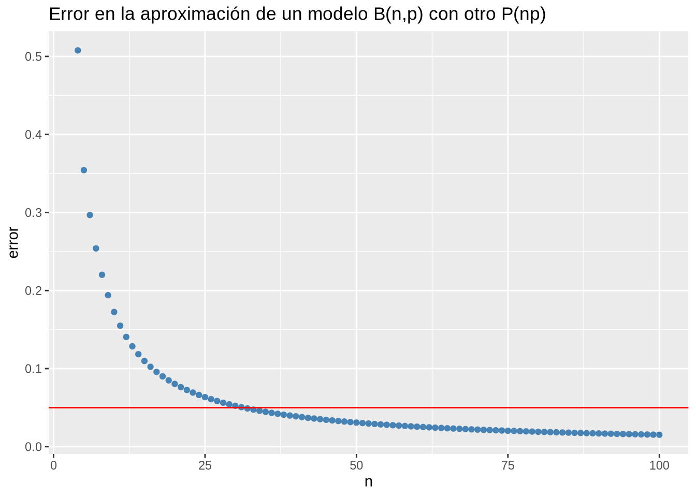
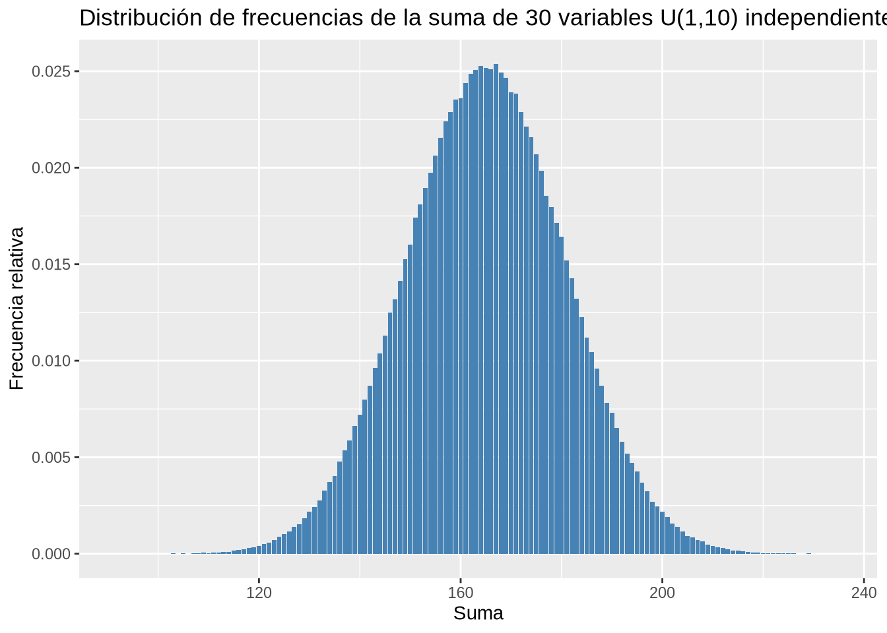

library(extraDistr)
library(kableExtra)
x <- 1:6
f <- ddunif(x, 1, 6)
df <- data.frame(x, f)
df |>
kable() |>
kable_styling(full_width = F)| x | f |
|---|---|
| 1 | 0.1666667 |
| 2 | 0.1666667 |
| 3 | 0.1666667 |
| 4 | 0.1666667 |
| 5 | 0.1666667 |
| 6 | 0.1666667 |
Para la realización de esta práctica se requieren los siguientes paquetes:
library(tidyverse)
# Incluye los siguientes paquetes:
# - dplyr: para el preprocesamiento y manipulación de datos.
# - ggplot2: para la representación gráfica.
# - purrr: para aplicar funciones a vectores.
library(extraDistr) # para distribuciones de probabilidad adicionales.
library(knitr) # para el formateo de tablas.
library(kableExtra) # para personalizar el formato de las tablas.Ejercicio 7.1 Sea \(X\) la variable que mide el resultado obtenido al lanzar un dado.
¿Qué tipo de modelo de distribución de probabilidad sigue \(X\)? Construir su función de probabilidad.
Se trata de una distribución uniforme discreta \(U(1, 6)\). Para calcular probabilidades con el modelo uniforme discreto se utiliza la función ddunif(x, min, max) del paquete extraDistr, donde min es el mínimo valor que puede tomar la variable, max es el máximo valor que puede tomar la variable y x es el valor de la variable.
library(extraDistr)
library(kableExtra)
x <- 1:6
f <- ddunif(x, 1, 6)
df <- data.frame(x, f)
df |>
kable() |>
kable_styling(full_width = F)| x | f |
|---|---|
| 1 | 0.1666667 |
| 2 | 0.1666667 |
| 3 | 0.1666667 |
| 4 | 0.1666667 |
| 5 | 0.1666667 |
| 6 | 0.1666667 |
Dibujar la gráfica de la función de probabilidad del modelo de probabilidad anterior.
Simular el experimento aleatorio del lanzamiento de un dado. Repetir el lanzamiento un millón de veces y dibujar el diagrama de barras de la distribución de frecuencias resultante. ¿Se parece a la distribución de probabilidad anterior?
# Fijamos una semilla de aleatorización para obtener resultados reproducibles.
set.seed(123)
data.frame(x = rdunif(10^6, 1, 6)) |>
ggplot(aes(x = x)) +
geom_bar(aes(y = after_stat(count/sum(count))), fill = "steelblue") +
labs(title = "Distribución de frecuencias del lanzamiento de un dado", x = "Número obtenido", y = "Frecuencia relativa")Warning: `rdunif()` was deprecated in purrr 1.0.0.
La distribución experimental obtenida es casi idéntica a la distribución teórica del modelo uniforme \(U(1,6)\).
Ejercicio 7.2 Un test consta de 10 preguntas de opción múltiple con cuatro posibles respuestas para cada pregunta.
¿Qué tipo de modelo de distribución de probabilidad sigue la variable que mide el número de aciertos al responder todas las preguntas aleatoriamente? Construir su función de probabilidad.
Se trata de una distribución binomial \(B(10, 0.25)\). Para calcular probabilidades con el modelo binomial se utiliza la función dbinom(x, n, p) del paquete stats, donde n es el número de repeticiones, p es la probabilidad de éxito, y x es el valor de la variable.
library(kableExtra)
x <- 0:10
f <- dbinom(x, 10, 0.25)
df <- data.frame(x, f)
df |>
kable() |>
kable_styling(full_width = F)| x | f |
|---|---|
| 0 | 0.0563135 |
| 1 | 0.1877117 |
| 2 | 0.2815676 |
| 3 | 0.2502823 |
| 4 | 0.1459980 |
| 5 | 0.0583992 |
| 6 | 0.0162220 |
| 7 | 0.0030899 |
| 8 | 0.0003862 |
| 9 | 0.0000286 |
| 10 | 0.0000010 |
Dibujar la gráfica de la función de probabilidad del modelo de probabilidad anterior. ¿Cómo es la asimetría de la distribución de probabilidad? ¿Cómo afecta a la asimetría de la distribución el número de respuestas posibles en cada pregunta del test?
library(ggplot2)
ggplot(df, aes(x = x, y = f)) +
geom_point(color = "steelblue") +
labs(title = "Función de probabilidad B(10,0.25)", x = "Número de preguntas acertadas", y = "Probabilidad")
La distribución es asimétrica hacia la derecha. A medida que aumenta el número de posibles respuestas, la probabilidad de acertar disminuye y la distribución binomial se hace más asimétrica hacia la derecha.
Dibujar la gráfica de la función de distribución del modelo de probabilidad anterior.
Para calcular probabilidades acumuladas con el modelo binomial se utiliza la función pbinom(x, n, p) del paquete stats, donde n es el número de repeticiones, p es la probabilidad de éxito, y x es el valor de la variable.
library(ggplot2)
df$F <- pbinom(x, 10, 0.25)
ggplot(df, aes(x = x, y = F)) +
geom_point(color = "steelblue") +
labs(title = "Función de distribución B(10,0.25)", x = "Número de preguntas acertadas", y = "Probabilidad acumulada")
La distribución es asimétrica hacia la derecha.
¿Cuál es la probabilidad de sacar 3 puntos o menos en el test si se contestan todas las preguntas al azar?
pbinom(3, 10, 0.25)[1] 0.7758751¿Cuál es la probabilidad de aprobar el test si se contestan todas las preguntas al azar?
En este caso se trata de una probabilidad acumulada hacia la derecha, es decir, por encima del valor dado. Para ello hay que añadir el parámetro lower.tail = FALSE a la función pbinom.
Las funciones de distribución en \(R\) incluyen la probabilidad del valor dado cuando la cola de acumulación es hacia la izquierda, es decir, se calcula \(P(X\leq x)\), pero no lo incluyen cuando la cola de acumulación es hacia la derecha, es decir, se calcula \(P(X>x)\).
¿Cuál es la probabilidad de tener un notable si se contestan todas las preguntas al azar?
Ejercicio 7.3 El número medio de llamadas telefónicas que llegan a un servicio de teleasistencia es de 4 por minuto en horario laborable.
¿Qué tipo de modelo de distribución de probabilidad sigue la variable que mide el número de llamadas que llegan al servicio de teleasistencia en un minuto? Construir su función de probabilidad.
Se trata de una distribución de Poisson \(P(4)\). Para calcular probabilidades con el modelo Poisson se utiliza la función dpois(x, lambda) del paquete stats, donde lambda es el número medio de sucesos en el intervalo considerado y x es el valor de la variable.
library(kableExtra)
x <- 0:15
f <- dpois(x, 4)
df <- data.frame(x, f)
df |>
kable() |>
kable_styling(full_width = F)| x | f |
|---|---|
| 0 | 0.0183156 |
| 1 | 0.0732626 |
| 2 | 0.1465251 |
| 3 | 0.1953668 |
| 4 | 0.1953668 |
| 5 | 0.1562935 |
| 6 | 0.1041956 |
| 7 | 0.0595404 |
| 8 | 0.0297702 |
| 9 | 0.0132312 |
| 10 | 0.0052925 |
| 11 | 0.0019245 |
| 12 | 0.0006415 |
| 13 | 0.0001974 |
| 14 | 0.0000564 |
| 15 | 0.0000150 |
Dibujar la gráfica de la función de probabilidad del modelo de probabilidad anterior. ¿Cómo es la asimetría de la distribución de probabilidad?
¿Cuál es la probabilidad de que lleguen menos de 2 llamadas en un minuto?
ppois(1, 4)[1] 0.09157819Si la empresa que da el servicio tiene operadores para atener como máximo 30 llamadas cada 5 minutos, ¿cuál es la probabilidad de que en un intervalo de 5 minutos no se puedan atender todas las llamadas?
Como el intervalo de tiempo ahora es de 5 minutos, el número medio de llamadas en este intervalo de tiempo es 4 = 20, y por tanto, hay que trabajar con un modelo de Poisson \(P(20)\).
Por otro lado, como ahora queremos calcular una probabilidad acumulada hacia la derechea, es decir, por encima del valor, hay que añadir el parámetro lower.tail = FALSE a la función ppois.
ppois(30, 20, lower.tail = FALSE)[1] 0.01347468Ejercicio 7.4 La ley de los casos raros establece que la función de probabilidad de un modelo de Poison \(P(\lambda)\) se obtiene en el límite cuando \(n\) tiende a \(\infty\) y \(p\) tiende a \(0\) de la función de probabilidad de un modelo Binomial \(B(n,p)\), donde \(\lambda = np\).
Aproximar un modelo binomial \(B(10, 0.2)\) mediante el correspondiente modelo Poisson aplicando la ley de los casos raros y comparar las gráficas de las distribuciones de probabilidad de ambos modelos. ¿Es una buena aproximación?
Según la ley de los casos raros \(B(10, 0.3) \approx P(3)\).
library(kableExtra)
library(tidyverse)
library(ggplot2)
x <- 0:10
fbinom <- dbinom(x, 10, 0.3)
fpois <- dpois(x, 3)
df <- data.frame(x, fbinom, fpois)
df |>
pivot_longer(-x, names_to = "Distribución", values_to = "Probabilidad") |>
ggplot(aes(x = x, y = Probabilidad, color = Distribución)) +
geom_point() +
labs(title = "Función de probabilidad de los modelos B(10, 0.3) y P(3)")
Vamos a calcular el error en la aproximación.
Así pues, la aproximación no es buena pues el error es mayor del 17%.
Aproximar \(B(30, 0.1)\) mediante el correspondiente modelo Poisson aplicando la ley de los casos raros y comparar las gráficas de las distribuciones de probabilidad de ambos modelos. ¿Es una buena aproximación?
Según la ley de los casos raros \(B(30, 0.1) \approx P(3)\).
x <- 0:30
fbinom <- dbinom(x, 30, 0.1)
fpois <- dpois(x, 3)
df <- data.frame(x, fbinom, fpois)
df |>
pivot_longer(-x, names_to = "Distribución", values_to = "Probabilidad") |>
ggplot(aes(x = x, y = Probabilidad, color = Distribución)) +
geom_point() +
labs(title = "Función de probabilidad de los modelos B(30, 0.1) y P(3)")
Vamos a calcular el error en la aproximación.
Ahora la aproximación es mucho mejor, ya que el error es menor del 5%.
Definir una función para repetir los procedimientos de los apartados anteriores para cualquier modelo binomial, y utilizarla para una binomial \(B(100, 0.03)\).
casos_raros <- function (n, p){
# Definimos el rango del modelo binomial.
x <- 0:n
# Función de probabilidad del modelo binomial.
fbinom <- dbinom(x, n, p)
# Función de distribución del modelo Poisson equivalente.
fpois <- dpois(x, n*p)
# Creamos un data frame con las dos funciones de probabilidad.
df <- data.frame(x, fbinom, fpois)
# Dibujamos las gráficas de las funciones de probabilidad.
grafico <- df |>
pivot_longer(-x, names_to = "Distribución", values_to = "Probabilidad") |>
ggplot(aes(x = x, y = Probabilidad, color = Distribución)) +
geom_point() +
labs(title = paste0("Función de probabilidad de los modelos B(", n, ",", p, ") y P(", n*p, ")"))
# Calculamos el error de la aproximación.
error <- df |>
mutate(error = abs(fbinom - fpois)) |>
summarize(error = sum(error))
return(list(grafico, error))
}
casos_raros(100, 0.03) [[1]]
[[2]]
error
1 0.01521393Dibujar una gráfica con los errores en las aproximaciones de un modelo binomial \(B(n,p)\) mediante un modelo Poisson \(P(3)\) para valores de \(n\) desde \(n=4\) hasta \(n=100\). ¿A partir de que \(n\) la ley de los casos raros da un error menor del 5%?
library(purrr)
error_casos_raros <- function (n){
# Definimos el rango del modelo binomial.
x <- 0:n
# Función de probabilidad del modelo binomial.
fbinom <- dbinom(x, n, 3/n)
# Función de distribución del modelo Poisson equivalente.
fpois <- dpois(x, 3)
# Calculamos los errores para cada n.
error = abs(fbinom - fpois)
# Devolvemos la suma de los errores
return(sum(error))
}
data.frame(n = 4:100) |>
mutate(error = map_dbl(n, error_casos_raros)) |>
ggplot(aes(x = n, y = error)) +
geom_point(color = "steelblue") +
geom_hline(yintercept = 0.05, color = "red") +
labs(title = "Error en la aproximación de un modelo B(n,p) con otro P(np)")
Ejercicio 7.5 La vida media de un tipo de batería es de 50 días.
¿Qué tipo de modelo de distribución de probabilidad sigue la variable que mide la duración de este tipo de baterías? Construir su función de densidad.
Se trata de una distribución exponencial \(Exp(1/50)\). Para calcular probabilidades con el modelo exponencial se utiliza la función dexp(x, lambda) del paquete stats, donde lambda es el inverso de la media y x es el valor de la variable.
Calcula la probabilidad de que la batería dure menos de 50 días.
Para calcular probabilidades con el modelo exponencial se utiliza la función pexp(x, lambda) del paquete stats, donde lambda es el inverso de la media y x es el valor de la variable.
pexp(50, 1/50)[1] 0.6321206Calcula la probabilidad de que la batería dure más de 100 días.
En este caso hay que calcular una probabilidad acumulada hacia la derecha, es decir, por encima del valor dado. Para ello hay añadir el parámetro lower.tail = FALSE a la función pexp.
pexp(100, 1/50, lower.tail = FALSE)[1] 0.1353353Calcula la probabilidad de que la batería dure entre 50 y 100 días.
Calcular los cuartiles de la distribución del tiempo de duración de las baterías.
Para calcular percentiles con el modelo exponencial se utiliza la función qexp(x, lambda) del paquete stats, donde lambda es el inverso de la media y x es la probabilidad acumulada del percentil.
Ejercicio 7.6 Se sabe que el nivel de colesterol en hombres de una determinada población sigue una distribución Normal \(N(220, 20)\) en mg/dl.
Dibujar la función de densidad de este modelo.
Para calcular densidades de probabilidad de una distribución normal se utiliza la función dnorm(x, mean, sd) del paquete stats, donde mean es la media, sd es la desviación típica y x es el valor de la variable.
Dibujar la gráfica de la función de distribución del modelo de probabilidad anterior.
Para calcular probabilidades acumuladas con el modelo normal se utiliza la función pnorm(x, mean, sd) del paquete stats, donde mean es la media, sd es la desviación típica y x es el valor de la variable.
Calcular la probabilidad de tener un nivel de colesterol por debajo de 220 mg/dl.
pnorm(220, 220, 20)[1] 0.5Calcular la probabilidad de tener un nivel de colesterol por encima de 260 mg/dl.
En este caso hay que calcular una probabilidad acumulada hacia la derecha, es decir, por encima del valor dado, y hay añadir el parámetro lower.tail = FALSE a la función pnorm.
pnorm(260, 220, 20, lower.tail = FALSE)[1] 0.02275013¿Qué porcentaje de la población presentará un nivel de colesterol entre \(\mu-\sigma\) y \(\mu+\sigma\)?
¿Qué porcentaje de la población presentará un nivel de colesterol entre \(\mu-2\sigma\) y \(\mu+2\sigma\)?
¿Qué porcentaje de la población presentará un nivel de colesterol entre \(\mu-3\sigma\) y \(\mu+3\sigma\)?
Calcular el rango intercuartílico de la distribución.
Para calcular percentiles con el modelo normal se utiliza la función qnorm(x, mean, sd) del paquete stats, donde mean es la media, sd es la desviación típica y x es la probabilidad acumulada del percentil.
Ejercicio 7.7 El teorema central del límite establece que la suma de \(n\) variables aleatorias independientes, con media y varianza finitas, se aproxima a una distribución normal. En este ejercicio comprobaremos su certeza experimentalmente.
Generar una muestra aleatoria de tamaño 1000000 de una variable aleatoria uniforme discreta U(1,10) y dibujar la gráfica de su distribución de frecuencias.
Generar otra muestra aleatoria de tamaño 1000000 de una variable aleatoria uniforme discreta U(1,10) y dibujar la gráfica de su distribución de frecuencias de la suma de esta variable y la anterior.
Definir una función que genere \(n\) muestras independientes de tamaño 1000000 de una variable uniforme discreta \(U(1,10)\) y devuelva su suma. Utilizar la función para dibujar el diagrama de barras de la distribución de frecuencias de la suma de 30 variables uniformes discretas \(U(1,10)\).
distribucion_suma <- function(n) {
df <- data.frame(suma = rep(0, 10^6))
for (i in 1:n) {
df[[paste0("x", i)]] <- rdunif(10^6, 1, 10)
df$suma <- df$suma + df[[paste0("x", i)]]
}
return(df)
}
ggplot(distribucion_suma(30), aes(x = suma)) +
geom_bar(aes(y = after_stat(count/sum(count))), fill = "steelblue") +
labs(title = paste0("Distribución de frecuencias de la suma de 30 variables U(1,10) independientes"), x = "Suma", y = "Frecuencia relativa")
Ejercicio 7.8 Una máquina de chips produce un 0.02% de chips defectuosos. Si la máquina produce 120 chips cada hora.
Calcular la probabilidad de que la máquina produzca algún chip defectuoso en 5 minutos.
Calcular la probabilidad de que produzca más de 1 chip defectuoso en 10 minutos.
Calcular la probabilidad de que produzca entre 1 y 3 chips defectuosos (ambos incluidos) en 10 minutos.
Ejercicio 7.9 Las ventas medias de un libro en un comercio electrónico son de 15 unidades diarias.
¿Cuál es la probabilidad de que un día concreto no se venda ningún libro?
¿Cuál es la probabilidad de que un día concreto se vendan entre 10 y 20 libros?
Si en el almacén que hace los envíos se dispone de un stock de 125 libros, ¿cuál es la probabilidad de que no puedan satisfacer todos los pedidos en una semana?
Ejercicio 7.10 Dibujar las gráficas de las funciones de probabilidad y distribución de una variable geométrica \(Geom(0.2)\).
Ejercicio 7.11 Generar 10 muestras aleatorias de una distribución y calcular la suma de sus cuadrados. Dibujar el diagrama de barras de la distribución de frecuencias de la muestra obtenida sumando los cuadrados. Compararla con la función de probabilidad de una distribución Chi-cuadrado con 10 grados de libertad.
Ejercicio 7.12 Dibujar las gráficas de las funciones de densidad y distribución de una variable T de Student \(T(12)\).